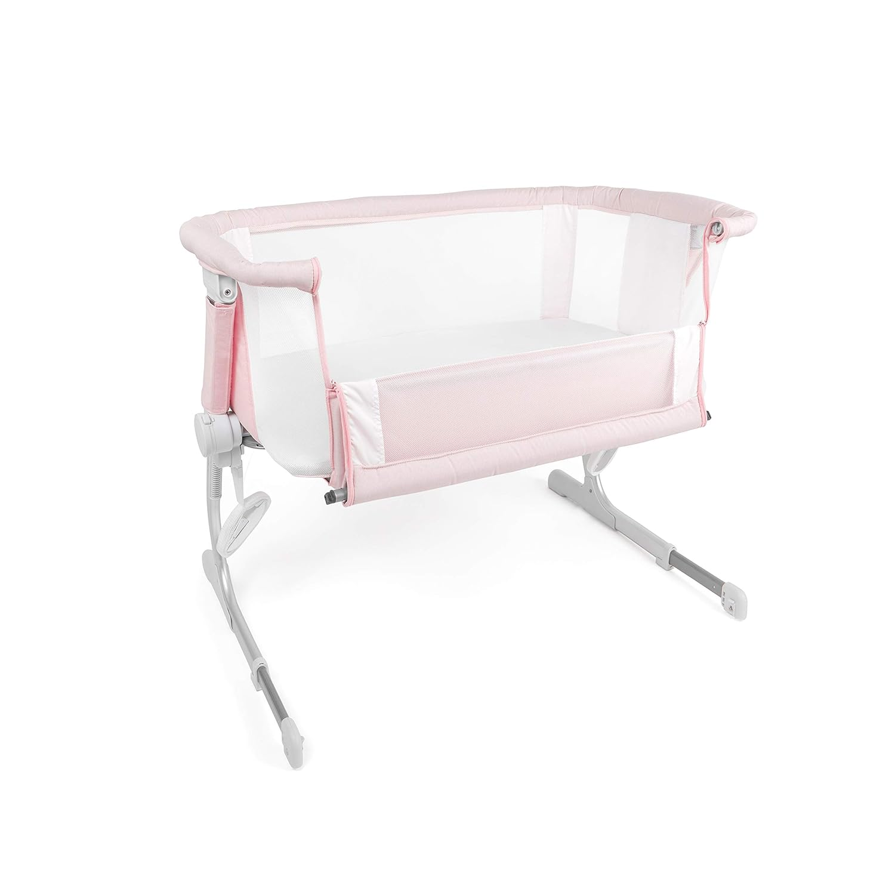
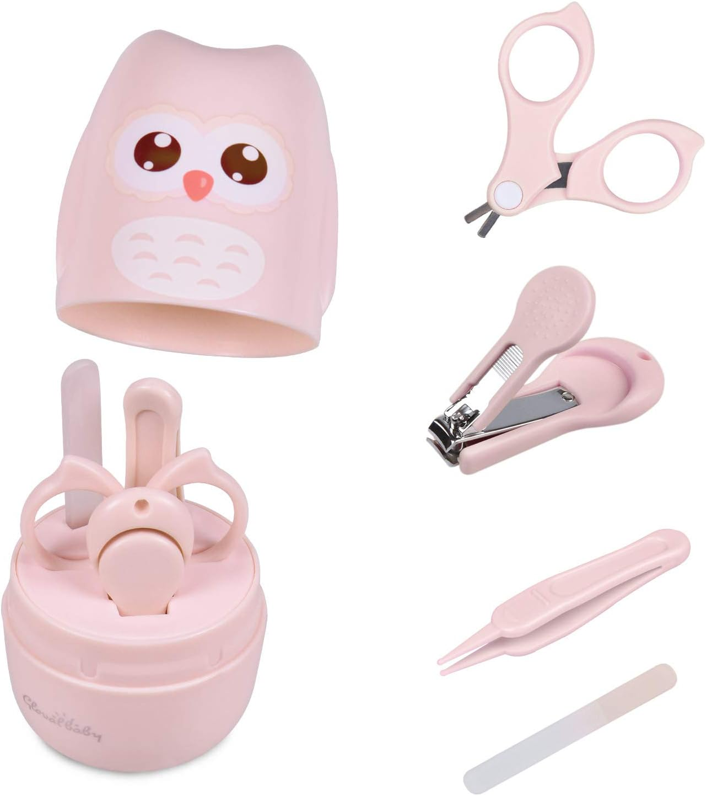
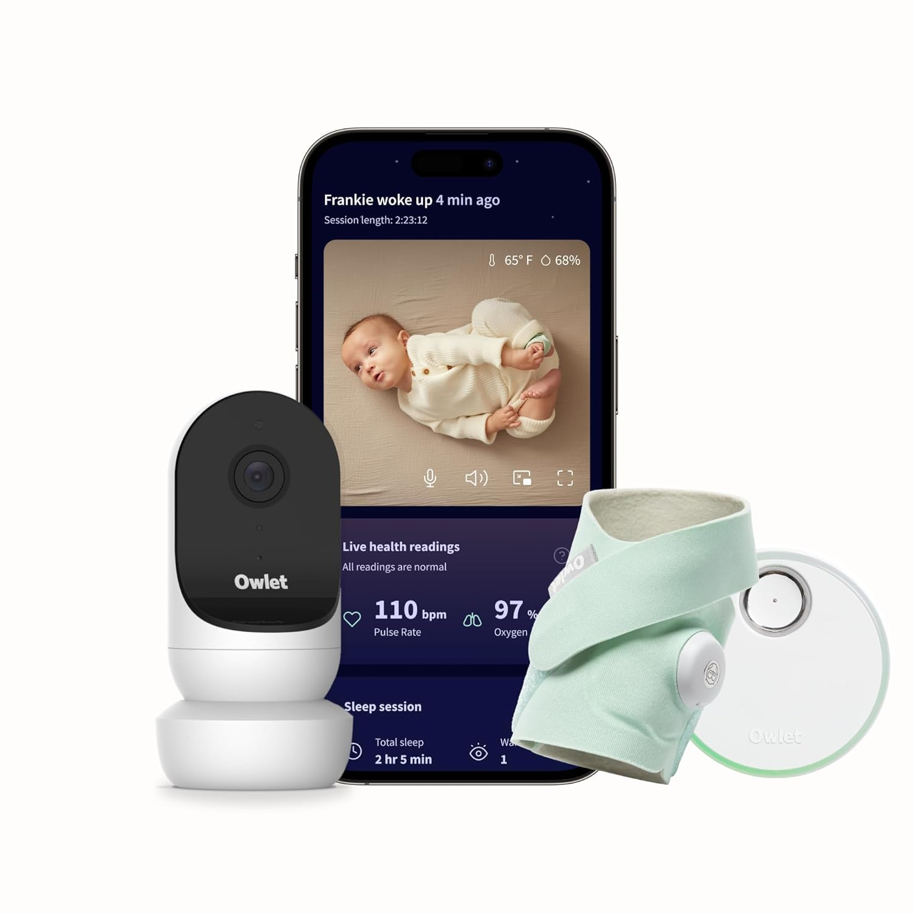
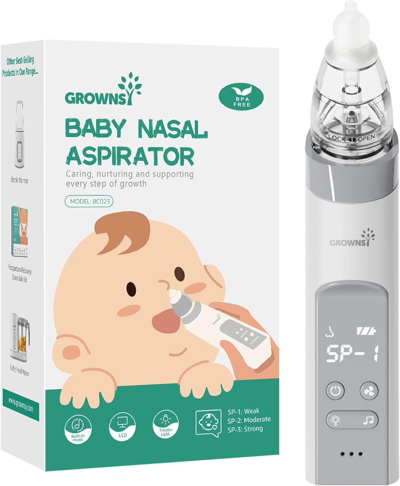
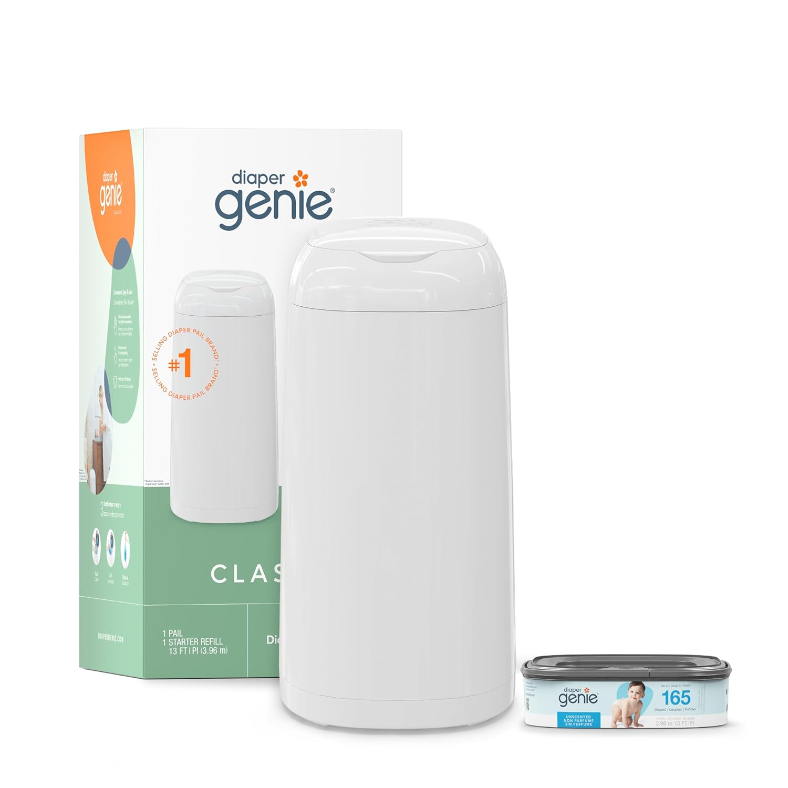

Lo mas retador de un bebe es que la mama se haga amiga de sus propios monstruos y formando parte de una generacion en la que de ninos nos decian berrinchudos y nos reganaban por hacer rabietas en vez de ensenarnos a identificar nuestra necesidad y como atenderla, esta parte de conocerme a mimisma para poder guiar a mi bebe es uno de los retos mas grandes. Y no hay que confundirnos, se castigara y se reganara cuando sea necesario pero justo esa es la clave, cuando sea necesario y de un modo inteligente emocionalmente
Voy a comenzar por lo que me salvo la vida, el fular. En su primer mes de vida de mi bebe pase unas semanas horribles en las que lloraba de un modo inconsolable todo el dia y me desgasto demasiado mentalmente hasta que descubri que el problema era que no estaba durmiendo bien durante el dia a pesar de que la arrullaba todo el tiempo, era muy dificil que conciliara el sueno hasta que la meti en este huevito de magia. Elegi esta version armable por comodidad para mi pero despues, al ir conociendo a mi bebe note que tambien es una version con la que puedes controlar muy bien la presion con la que sujetas al bebe sin perder su comodidad y seguridad, tambien es transpirable porque mi bebe nacio en verano.
Tuve la fortuna de que mi bebe nunca sufrio problemas en dormir en su cuna, desde el hospital nos guiaron por la opcion de no dormir con ella, ponerla en su cuna sin cobijas ni peluches cerda. Como digo, mi bebe se acostumbro por completo a dormir asi por las noches entonces no tengo grandes recomendaciones con respecto al sueno.
Su cuna la elegimos en una version sencilla, no fuimos por aquellas 4 en uno con super poderes y creo que fue la mejor opcion porque al dia de hoy en sus dos messes esta a poco de dejarla porque ya no va a caber pero esta version tambien nos peritio tenerla pegada a nuestro colchon sin perder ese limite de seguridad entre ella y nosotros.
Las unas son algo que me ha tomado mas tiempo a la semana porque crecen a una velocidad impresionante! son tres veces a la semana las que necesito cortarle las unas a mi bebe y lo que se me hizo mas practico fue hacerlo con tijeras. Consegui este set pero lo unico que he usado son las tijeras y la lima en sus primeras semanas, lo compre por el corta unas pero sobre la marcha fueron las ijeras las que ganaron como las mas usadas..
La calceta de la vida es el siguiente. Es una calceta monitor que registra los signos vitales del bebe mientras duerme y arroja alarmas en caso de que algo este mal. Esta version con camara tambien monitorea la temperatura del cuarto, avisa si el bebe empieza a llorar y si hay movimiento y tiene dos vias de voz/audio. La camara no la hemos usado mucho pero la calceta da un gran nivl de tranquilidad por las noches.
El sacamocos es mi siguiente recomendacion. Habia vistto las versiones en uno inhala de un extremo pero no me convencieron y tambien tenemos uno tipo pera que no he usado pero el que amo es este electrico. Es muy facil de usar, la succion es buena y no lastima y siento mucho control al usarlo.
Adquirimos tambien un bote especial para los panales que tiene un sistema que no permite la salida de olores.Hasta el dia de hoy no hemos sufrido con ese tema y bajo mi experiencia la version mas sencilla es buenisima, no le pide nada a sus companeras.
Para el momento del bano.